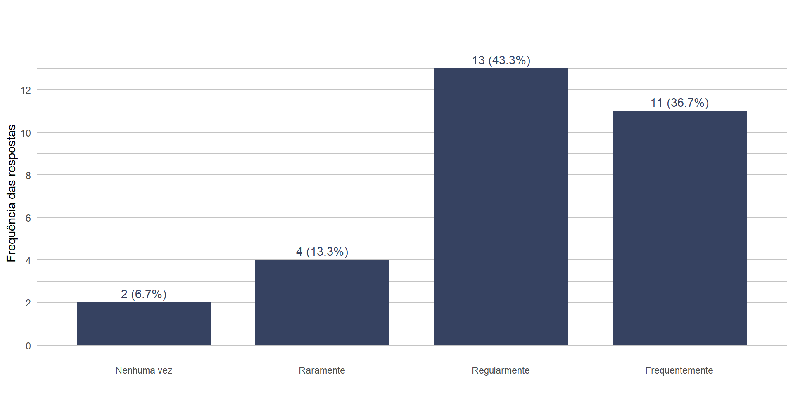
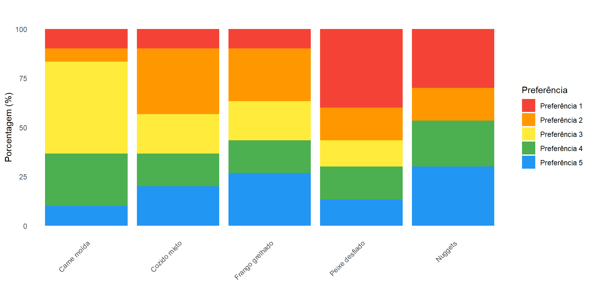

Universidade Federal do Espírito Santo
Centro de Ciências Exatas
Curso de Estatística Aplicada
Teste de Page para k-amostras relacionadas
Discente: Vitória N. de Jesus Sesana
Doscente: Dr. Adelmo Inacio Bertolde
Vitória - ES
2025
Sumário
- Sobre o teste
- Metodologia do teste
- Aplicação prática com dados reais
Sobre o teste de page
História
A história do Teste de Page tem origem no contexto dos testes não paramétricos desenvolvidos no século XX, e está associada ao psicológo e estatístico americano Ellis Batten Page, que propôs o teste em 19631.
Elliot Page estava interessado em métodos eficientes para analisar dados classificados (rankings), especialmente quando havia uma hipótese de ordem específica entre tratamentos.
Page x Friedman
Ao contrário do teste friedman para k-amostras relacionadas, o teste de page considera a ordinalidade dos dados para cada bloco.
Ou seja, ele é uma extensão do teste de Friedman, mas com uma hipótese alternativa ordenada, do tipo:
\[ \text{Tratamento 1} \leq \text{Tratamento 2} \leq \dots \leq \text{Tratamento k} \]
O teste de Page para alternativas ordenadas é ligeiramente mais poderoso que a análise de variância de Friedman por postos.
Quando usar?
Dados pareados ou em blocos.
As medições podem ser ordenadas (ordinais).
Quer verificar se existe uma tendência de ordenação entre os tratamentos.
Metodologia
Dados
| Bloco | Tratamento 1 | Tratamento 2 | \(\cdots\) | Tratamento \(k\) |
|---|---|---|---|---|
| Bloco 1 | \(X_{1,1}\) | \(X_{1,2}\) | \(\cdots\) | \(X_{1,k}\) |
| Bloco 2 | \(X_{2,1}\) | \(X_{2,2}\) | \(\cdots\) | \(X_{2,k}\) |
| Bloco 3 | \(X_{3,1}\) | \(X_{3,2}\) | \(\cdots\) | \(X_{3,k}\) |
| \(\vdots\) | \(\vdots\) | \(\vdots\) | \(\ddots\) | \(\vdots\) |
| Bloco \(b\) | \(X_{b,1}\) | \(X_{b,2}\) | \(\cdots\) | \(X_{b,k}\) |
Matriz com b blocos (linhas) e k tratamentos (colunas).
Passo a passo 1
Passo a passo para a aplicação do teste:
- Obter a matriz de dados (blocos × grupo);
- Rankear os dados dentro de cada linha;
- Definir pesos conforme a ordem esperada;
- Determinar o nível de confiança;
- Calcular a estatística do teste;
- Comparar com valor crítico ou usar aproximação normal para obter p-valor.
Hipóteses
\[ \begin{cases} H_0: \text{Não há tendência de ordenação entre os tratamentos} \\ H_1: \text{Existe uma tendência de ordenação específica entre os tratamentos} \end{cases} \]
Se você suspeita de uma tendência crescente \(T_{1} < \dots < T_{k}\), então os pesos são:
\[w = \{1,\dots,k\}\]
E então suas hipóteses serão:
\[ \begin{cases} H_0: \text{Não há tendência de ordenação entre os tratamentos} \\ H_1: T_{1} < \dots < T_{k} \end{cases} \]
Estatística do teste
\[ L = \sum{}_{j=1}^{k}w_{j}R_{j}\]
\(w_{j}\) = peso esperado do tratamento j;
\(R_{j}\) = soma dos ranks do tratamento.1
Decisão
Você compara o valor de L com valores críticos em uma tabela de Page (existe para pequenos valores de n e k), ou para maiores valores usa-se a aproximação normal:
\[ \mu_L = \frac{n k (k+1)}{2} \]
\[ \sigma_L^2 = \frac{n k (k+1)(2k+1)}{12} \]
\[ Z = \frac{L - \mu_L}{\sigma_L} \]
Aplicação no R
No pacote DescTools, há a seguinte função para executar o teste de page:
Executa o Teste de Page para alternativas ordenadas usando um algoritmo exato proposto por Stefan Wellek (1989) com dados em blocos não replicáveis
Função PageTest()
A alternativa implementada é que o parâmetro de localização será crescente ao longo dos grupos. Se a direção oposta for necessária, a ordem dos grupos deve ser invertida dentro da matriz.
Os grupos e blocos são obtidos a partir dos índices das colunas e das linhas, respectivamente.
Valores NA não são permitidos nos grupos ou blocos; se y contiver NA, os blocos correspondentes serão removidos.
Para valores pequenos de k (métodos) ou N (objetos de dados), o PageTest calculará os valores-p exatos. Para k, N > 15, Inf, é retornada uma aproximação normal. Apenas um desses valores será retornado.
Aplicação
Sobre os dados
Foi aplicado um questionário para coletar a ordem de preferência de alguns dos pratos principais não vegetarianos ofertados no Restaurante Universitário da Universidade Federal do Espírito Santo.
Os pratos escolhidos foram: frango grelhado, peixe desfiado, carne moída, nuggets e cozido misto.
O objetivo é verificar se as preferências dos estudantes seguem a seguinte ordem:
\[ \text{Carne moída} < \text{Cozido misto} < \text{Frango grelhado} \\ \quad\;\;\; < \text{Peixe desfiado} < \text{Nuggets}\]
Questionário
- Você se considera vegano/vegetariano?
- Sim/Não
- Quantas vezes por seman, em média, você frequenta o RU?
- Nenhuma vez por semana;
- Raramente (1 vez por semana);
- Regularmente (2 a 5 vezes por semana);
- Frequentemente (6 a 10 vezes).
- Ranqueamento das opções de prato principal.
Ranqueamento

Hipóteses
\[\begin{cases} H_0: \text{Não há tendência de ordenação entre os tratamentos} \\ H_1: \text{Carne moída} < \text{Cozido misto} < \text{Frango grelhado} \\ \quad\;\;\; < \text{Peixe desfiado} < \text{Nuggets} \end{cases}\]Com os pesos sendo:
\[w = \{1,2,3,4,5\}\]
E o nível de signficância adotado:
\[\alpha = 5\%\]
Análise exploratória dos dados
Quantidade total de estudantes: 30
Quantidade de vegetarianos/veganos:
| Vegetariano/Vegano | Quantidade |
|---|---|
| Sim | 0 |
| Não | 30 |
| Total | 30 |
Análise exploratória dos dados
- Gráfico de barras das frequências semanais de idas ao RU:

Análise exploratória dos dados
- Percentual dos ranqueamentos por opção de prato principal:

Aplicação do teste de page
Aplicação do teste de page
Cenário 2
Apenas indivíduos que vão frequentemente ao RU (6 a 10 vezes por semana).
Referências
Page, E. (1963): Ordered hypotheses for multiple treatments: A significance test for linear ranks. Journal of the American Statistical Association, 58, 216-230.
Siegel, S. & Castellan, N. J. Jr. (1988): Nonparametric statistics for the behavioral sciences. Boston, MA: McGraw-Hill.
Wellek, S. (1989): Computing exact p-values in Page’s nonparametric test against trend. Biometrie und Informatik in Medizin und Biologie 20, 163-170
https://cran.r-project.org/web/packages/DescTools/DescTools.pdf